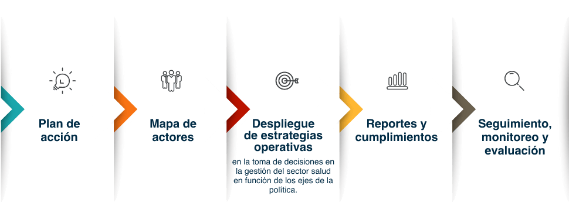
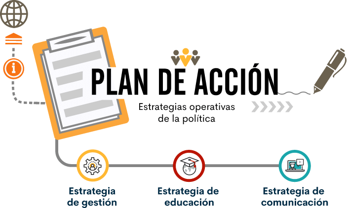

1. Introducción
La base temática de esta unidad desde una perspectiva operativa, abordará el marco estratégico de la PPSS que está conformado por los 5 ejes estratégicos y sus 33 líneas de acción, que, a su vez tienen implícitas las estrategias operativas (gestión, educación, comunicación). En su conjunto constituyen las líneas maestras que dan respuesta a las debilidades de los procesos participativos y de control social en salud, y son elemento central para operar la PPSS.
Se desarrollarán los siguientes elementos estratégicos para la operación de la Política de Participación Social en salud:
El marco estratégico de la PPSS organiza y articula el actuar institucional y comunitario para fortalecer y promover los procesos de participación social en salud en aras del cumplimiento del derecho a la salud.
La implementación de la PPSS considera el desarrollo y articulación de las siguientes tres estrategias: gestión, comunicación y educación, operadas a través del marco estratégico que están implícitas e integradas y son transversales en los cinco (5) ejes estratégicos y en las treinta y tres (33) líneas de acción, para efectos de armonizar las intervenciones a ejecutar, evitar la duplicidad de trabajos, hacer eficientes los recursos económicos y así dar respuesta a la finalidad de la política.
Como herramienta fundamental, base para la planificación y puesta en marcha de un plan de acción y sus intervenciones, es necesario implementar metodologías de diagnóstico, gestión de proyectos, identificación de recursos, mapeo de actores institucionales y sociales, así como, la caracterización de usuarios que permitan identificar las intervenciones en el marco de las estrategias operativas que permitan formular e implementar el plan de acción con éxito, permitiendo la participación en la gestión, facilitando así la definición y el despliegue de acciones pertinentes y coherentes con los contextos sociales a intervenir, en el marco de las competencias y responsabilidades otorgadas a los diferentes actores del sistema.
2. Plan de acción
El plan de acción es una herramienta de planificación anual, utilizada en la gestión y control, que organiza, conduce e implementa el conjunto de intervenciones que se van a llevar cabo por las entidades del sector salud. Funciona como una p. de ruta que contiene el esquema de respuestas para hacer frente a las barreras o limitaciones de la participación social en salud en el país.
Es una herramienta, en la que las entidades del sector salud registran información para el reporte al Ministerio de Salud y Protección Social, en adelante (MSPS), tanto la programación de las acciones definidas para dar cumplimiento a la PPSS, como su ejecución.
Su diligenciamiento implica a nivel interno de las entidades: identificar la capacidad institucional (cualificación de personal, recursos económicos, logísticos y tecnológicos) para garantizar los procesos efectivos de participación, y a su vez, establecer dinámicas de trabajo que integren los proceso de participación en las acciones que se desplieguen en todas las áreas misionales de la entidad; a nivel externo: conocer a fondo las problemáticas en salud del territorio y a nivel institucional, que sean susceptibles de abordar desde la participación, las debilidades y fortalezas ciudadanas para su incidencia en las decisiones del sector, los actores que inciden o pueden aportar al diseño de alternativas de solución para superar las barreras o dificultades de los procesos de participación a nivel local, esto a través del desarrollo de un mapeo de actores.
Se requiere, adicionalmente, que este plan de acción integre y refleje la definición de acciones o intervenciones en el marco de las competencias de cada actor responsable de la aplicación de la Política; desde esta lógica la formulación de los planes definen el horizonte de acción para dar respuesta a los ejes estratégicos, logrando que el posicionamiento de la política sea transversal, orientado a través de la operación de las estrategias operativas que se deben ver reflejadas en los ejes y líneas de acción.
La importancia del plan de acción está dada en primer lugar, en que es el documento que consolida las metas y actividades a desplegar para cada una de las líneas de acción, así como la clara definición de la población a quien se dirigen, los tiempos de ejecución y los recursos inverti-dos para su desarrollo y, en segundo lugar, a que una vez formulado se trasforma en la p. de ruta o de trabajo a través de la cual los equipos materializan y concretan la operación de la PPSS. En conjunto debe responder a las acciones comunicativas, de educación y gestión.
Teniendo en cuenta que en el plan de acción se priorizan las iniciativas que se van a llevar a cabo en la anualidad, concretadas en metas específicas que deben alcanzarse con sus actividades; su quehacer debe orientarse a la organización de estructuras y prácticas de trabajo, a fin de que su puesta en marcha sea exitosa y de respuesta a la finalidad de la política.
El diseño de acciones para el cumplimiento de las metas y las actividades deben ir de la mano, teniendo en cuenta que el plan de acción es una herramienta que tiene un hilo conductor, que enlaza a su vez los ejes estratégicos y las líneas de acción de manera progresiva y ordenada.
Así entonces, el despliegue de la PPSS a través de sus ejes estratégicos, tiene una lógica que inicia con el fortalecimiento de capacidades institucionales y del empoderamiento de la ciudadanía para intervenir, incidir y decidir en la gestión del sector, pasando por el impulso de la cultura de la salud, en donde se articulan al proceso de participación, las acciones de cuidado colectivo e individual; escala hacia la promoción y fortalecimiento del control social como herramienta para el buen desempeño en la gestión pública y transparente de recursos, para confluir en la participación ciudadana con decisión en la gestión, a través de la disposición y fortalecimiento de espacios participación para la planeación, el seguimiento y la evaluación, y la priorización de la inversión, fases del ciclo de la formulación de políticas públicas; todo ello teniendo en cuenta las competencias y responsabilidades de los diferentes actores del sector.
Ejes Estratégicos
Permiten viabilizar los éxitos del desarrollo y neutralizar los fracasos a que se expone el desarrollo de la PPSS. Es importante destacar que cada uno de los ejes estratégicos, define las grandes líneas de acción que permiten alcanzar los objetivos de la PPSS. Estos señalan la ruta a seguir en cada área estratégica para responder a las exigencias de la comunidad, respetando la diversidad territorial, institucional y poblacional, logrando así impactarlos transversalmente.
Es necesario entonces trabajar en la formulación de acciones propositivas en torno a la realización del derecho a la participación, lo cual implica reforzar el papel que deben desempeñar las entidades del sector salud, para que visibilicen las intervenciones que se ejecutan en el territorio, y que demuestren la conexión con el despliegue de las estrategias operativas (gestión, educación, comunicación) y su relación con las líneas de acción que deben desarrollar los actores del sistema de salud en el marco de sus competencias por cada uno de los ejes.
Recuerde que cada uno de los ejes se orienta a través de las líneas que se identifican dentro del plano de gestión, comunicación y educación, así se despliegan las estrategias operativas a lo largo de la herramienta del plan de acción.
En todo caso, la política requiere el desarrollo gradual de instrumentos que permitan su implementación progresiva en los diferentes ámbitos territoriales e institucionales.
Ejes estratégicos y líneas de acción para la participación y control social
Eje 1. Fortalecimiento institucional para la garantía del derecho a la participación.
Se fundamenta en nueve líneas de acción orientadas al fortalecimiento de las capacidades institucionales para cumplir con su papel de garante, a través de recursos técnicos, logísticos, operativos, financieros y humanos. Para ello, hay que fortalecer las estructuras de las instituciones del nivel nacional y del nivel territorial que lideran la promoción de la participación social en salud.
El fortalecimiento de las entidades conlleva a trabajar en: robustecer las capacidades del talento humano en el sector, cualificándolos con conocimientos y competencias, conformando grupos de trabajos articulados al interior de las organizaciones que garanticen el ejercicio armónico de los practicas participativas y generen sinergias con todos los actores para la sustentabilidad de la participación como derecho.
Eje 2. Empoderamiento de la ciudadanía y las organiza-ciones sociales en salud.
Se definen en nueve líneas de acción orientadas al fortalecimiento de las capacidades de la ciudadanía para lograr un rol activo con una participación real que permita incidir y decidir en el marco de la gestión pública en salud. Permite definir herramientas que le permitan a los espacios de participación formales: Asociaciones de Usuarios, alianzas, Copacos, Comités, Consejo Territorial de Seguridad Social en Salud (CTSSS), cumplir con su papel dentro de las instancias del sector en el marco del derecho a la salud. De igual forma se trata de fortalecer a todas las organizaciones sociales autónomas que trabajan por el cumplimiento del derecho a la salud.
Este ejercicio de dinámicas colectiva supone contar con espacios de interlocución efectivos, considerar contextos digitales para fomentar una relación más directa y fluida con la comunidad, poner en marcha intervenciones desde una perspectiva de fortalecimiento comunitaria, es decir, acciones para reconocerlas y potenciarlas, y ampliar la base de convocatoria con acciones incluyentes y que tenga en cuenta el contexto territorial.
Eje 3. Impulsar la cultura de la salud.
Dado que el Estado tiene la responsabilidad de garantizar el ejercicio del cuidado (colectivo) y del autocuidado (indi-vidual) como elemento esencial para el cumplimiento del derecho a la salud, insta a los actores del sistema de salud a incorporar y activar el ejercicio de la ciudadanía en los programas de promoción y prevención para lograr transformar la mentalidad de las personas y para afectar determinantes sociales en salud, a través de este eje con cinco líneas de acción definidas para tal fin.
La importancia de este eje radica en el fortalecimiento de la participación social para poder afectar las determinantes sociales de la salud y la producción de una cultura de salud; para ello, debe existir un trabajo articulado entre salud pública y participación social al interior de cada institución para crear alternativas de acción colectiva capaces de transformar condiciones de salud.
Eje 4. Control Social en Salud
Con seis líneas de acción este eje de la PPSS se orienta al fortalecimiento del control ciudadano como derecho y un deber en acompañar, vigilar y controlar la gestión pública del sector y la prestación de los servicios de salud, así como sobre los recursos públicos, las instituciones y los actores del sistema como elemento crucial del derecho a la salud.
Para ello, hay que fortalecer los conocimientos y desarrollar habilidades en los ciudadanos, veedurías en salud, redes de veedurías ciudadanas, líderes sociales, entre otros, con conceptos y herramientas prácticas que incorporen el enfoque de derecho con temas a abordar de gestión pública, análisis información y control social. Con el objetivo de realizar un buen ejercicio del control ciudadano, es necesario contar con una ciudadanía cualificada y apropiada de la construcción social de la salud.
Además, esta tarea debe ser vista por las entidades como un apoyo a los procesos de gestión pública, el manejo transparente y eficiente de los recursos públicos y al mejoramiento en la prestación de los servicios de salud. Esta labor de acompañamiento a las prácticas de control social amerita el reconocimiento a los ciudadanos, veedurías en salud y líderes sociales, entre otros.
Eje 5. Gestión y garantía de la salud con participación en el proceso de decisión
Este eje con cuatro líneas de acción estratégicas para el ejercicio pleno de la participación mediante la apropiación de instrumentos y de herramientas, y las condiciones institucionales que le permitan a la ciudadanía vincularse a la gestión del sector salud para impulsar la definición, implantación y control de políticas, programas, generación de proyectos, en la presupuestación del sector y en la solución de los problemas de salud de su entorno.
Así como los espacios de toma de decisiones frente a la Política en salud, en este eje se consolida el ejercicio pleno de la participación ciudadanía en la toma de decisiones del sector salud.
Está orientado a apropiar instrumentos y herramientas, y condiciones institucionales que le permitan vincularse a la ciudadanía en la gestión del sector salud en la definición, implementación, control de políticas, programas y generación de proyectos, y en la presupuestación del sector para la toma de decisiones encaminadas a la solución de los problemas de salud de su entorno.
El desarrollo del eje implica identificar metodologías de planeación, experiencias de presupuestación participativa, o diseñar metodologías propias para implementarlas de manera progresiva, así como, identificar espacios y generar las condiciones que permitan la participación de la ciudadanía en espacios de decisión de forma efectiva.
Esto se traduce en vincular a la ciudadanía en las decisiones del sector, supone la toma de conciencia sobre los procesos que pueden incidir en la vida, elevando la capacidad de influencia a través de procesos participativos organizados.
3. Mapa de Actores
La participación es un derecho universal, que tiene implícitos elementos fundamentales para su efectivo desarrollo. En primer lugar, la equidad como base para reconocer la diversidad de condiciones y posiciones de los actores, y el principio de igualdad que permite a partir de la adopción del enfoque diferencial, reducir las brechas que limiten su ejercicio.
Así mismo, partiendo de los principios de la PPSS abordados en la unidad 1, la territorialidad es una de las condiciones que se debe cumplir con la operación de la Política, lo que implica que los escenarios y mecanismos de participación en salud, se generen desde la base de las dinámicas territoriales, puesto que, en cada territorio o área de influencia, se construyen lógicas participativas heterogéneas. Es decir, que las intervenciones de un territorio no son aplicables a otro, de ahí la importancia de reconocer el carácter diferencial de las poblaciones, la identificación clara de los diferentes actores y sus dinámicas sociales es fundamental ya que es con ellos con quienes se busca interactuar y son finalmente la base de las acciones a diseñar e implementar.
La importancia y alcance de la identificación de actores, institucionales y sociales, y sus contextos es lograr que las entidades trabajen en la consolidación del derecho a la participación social en salud, en donde las entidades del sector establezcan contactos efectivos entre la institucionalidad y la sociedad, esto implica que se desarrollen espacios activos de interacción con la ciudadanía para superar la mirada institucional y hacer un bordaje acorde a la realidad de la población.
En este sentido, es necesario precisar que el despliegue y la transversalidad de la PPSS tiene por lo menos 2 escenarios en los cuales es indispensable desarrollar la identificación de los actores y sus relaciones.
El primero de ellos, externo, para el caso de las entidades territoriales de Salud, y demás entidades del sector como Empresas Promotoras de Salud - EPS e Instituciones Prestadoras de Salud - IPS, ubicado en la esfera o ámbito social, en donde se encuentran los diferentes actores sociales o espacios de participación sujetos a estas entidades, y otros actores institucionales dentro del territorio, pero diferentes a la dirección de salud o líderes de los procesos de participación de la entidad.
En segundo lugar, el campo de aplicación interno, o ámbito institucional referido a líderes de procesos al interior de las direcciones de salud, entidades del sector o que se deben engranar a los objetivos de la Política.
Para el caso de las Empresas Promotoras de Salud - EPS e Instituciones Prestadoras de Salud - IPS, la identificación de la población es fundamental, que en este caso son los usuarios, ya sea en el aseguramiento como en la prestación los servicios de salud.
Según estos escenarios los grupos de interés a identificar corresponden, según el caso a los públicos externos o internos, con una lógica en doble vía teniendo en cuenta que varía el relacionamiento que se establece. Pueden ser actores sociales beneficiarios de las intervenciones, o actores institucionales, es decir aquellos con quienes se debe generar articulación y trabajo conjunto, como se señala a continuación:
Para este fin, se propone a las entidades territoriales de salud, desarrollar el mapeo de actores, y a las IPS y EPS, aplicar la caracterización, metodologías o técnicas de diagnóstico, que como se mencionó anteriormente brindan la información necesaria para perfilar las acciones a implementar y responder con criterios de pertinencia y coherencia a las necesidades de la población objeto de las acciones de participación en salud, a saber: (líderes organizaciones sociales, veedurías, redes de veedurías, asociaciones de usuarios, COPACOS, entre otros).
Ventajas del mapeo de actores y de usuarios
Para la institucionalidad

Permite superar la noción de la identificación de actores, limitada a la consolidación de listados o bases de datos, con los cuales no se logra generar impactos ni transformaciones en las dinámicas de la comunidad.
Los resultados que arroja permiten cruzar información para diseñar con pertinencia el conjunto de acciones que se despliegan en los ejes de la PPSS, a través de las diferentes líneas de acción.
Aporta a su vez, insumos necesarios la operación de las estrategias de Gestión, Comunicación y Educación.
A partir de allí se precisan acciones asociadas a los planes de convocatoria, a las estrategias de incentivos y de reconocimiento, al plan de asistencia técnica, estrategias de comunicación, entre otros.
Permite clarificar canales de influencia, capacidades, intereses liderazgos, espacios y escenarios de participación, entre otros.
Visibiliza barreras y oportunidades.
Permite identificar con claridad la población y las temáticas de observancia en el caso de los observatorios de participación y control social.
Para los ciudadanos y usuarios
Apropiación, liderazgo e incidencia en procesos participativos.
Sujetos de derechos, activos en los procesos de transformación y decisiones del sector, espacios y escenarios de participación, entre otros.
Se benefician de acciones focalizadas en la superación de sus necesidades reales.
Afectación comunitaria de determinantes sociales de la salud.
Actualmente existen diversas metodologías para la realización de mapeo de actores, en este caso se sugiere tomar como referencia el aparte del Mapa de actores dentro del Lineamento para transversalización de la Política de Participación social en salud del Ministerio de Salud y Protección Social, (Páginas 11-14), donde se presenta indicaciones y las posibles variable a tener en cuenta para su desarrollo.
La caracterización de usuarios o grupos de interés
En esta misma línea, la metodología de caracterización de usuarios o grupos de valor, al igual que el mapa de actores, permite llevar a cabo el reconocimiento de un grupo de interés, que en el caso de las EPS e IPS, son los usuarios receptores de los servicios que la entidad ofrece, es decir los públicos con quien está en constante contacto y con quienes se construye una relación a partir de la prestación y recepción de servicios de salud, con el fin de identificar con claridad las acciones de participación que deben implementarse orientadas a los usuarios identificados.
La base entonces de esta metodología es identificar: características, necesidades, intereses, expectativas y preferencias, formas de comunicación y consumo de información, compartidas entre usuarios, para focalizar acciones de participación y generar así procesos de reingeniería e innovación.
Para los fines de la PPSS, la caracterización permite tener acceso a la información que facilita identificar por lo menos dos grandes criterios:
Reconocimiento de la diversidad de usuarios y sus necesidades.
Cómo la entidad gestiona el relacionamiento a través de los recursos con los que cuenta (humanos, financieros, tecnológicos y de comunicaciones, logísticos, etc.)
En el caso del ejercicio de caracterización de usuarios, las Entidades Administradoras de Plan de Beneficios (EAPB), la variable relacionada con el contexto territorial permite identificar información más precisa sobre la situación de salud de su población afiliada y por ende la focalización de sus acciones de participación.
Lo anterior constituye entonces una fuente de información que aporta igualmente que se deben incorporar en los procesos que comprende el despliegue de la Política de Participación Social en Salud.
4. Despliegue de las estrategias operativas en la toma de decisiones en la gestión del sector salud en función de los ejes de la política
Formulación y puesta en marcha del plan de acción
Dado que la implementación de la Política de Participación es gradual y progresiva, su desarrollo implica contar con una planeación estratégica efectiva desde el inicio de la programación del plan de acción hasta su ejecución para alcanzar las metas establecidas desde un panorama general hasta uno más detallado de las actividades para lograr la realización del derecho a la salud.
Lograr una óptima implementación implica trabajar en el desarrollo de acciones conectadas con las estrategias operativas: gestión, educación y comunicación, que dinamicen la precitada Política Pública, desplegándolas de manera trasversal en sus cinco (5) ejes y articulándolas de manera que se optimicen esfuerzos operativos, logísticos y financieros para dar cumplimiento integral de la Política.
Con el fin de apropiar el desarrollo y el despliegue de las estrategias, el equipo técnico del Ministerio de Salud y Protección Social diseñó una guía de formulación, que contiene las consideraciones necesarias para tener en cuenta para la programación de planes de acción. Estas recogen propuestas con los posibles puntos a revisar para la formulación de metas y a actividades de cada una de las líneas de acción de la PPSS, dichas consideraciones se presentan a manera de preguntas orientadoras, con el fin que guíen a los equipos que lideran los procesos de participación en las entidades del sector y que tienen a cargo el desarrollo de actividades a fin de dar cumplimento de la política, para lo cual es fundamental transversalizar las estrategias operativas de gestión, educación y comunicación, por medio de acciones integradas, lo que permitirá que tanto la programación como su desarrollo, se lleven a cabo de forma ordenada y articulada para que generen un impacto significativo en la garantía del derecho a la participación.
A continuación, se hace una descripción de las acciones y el alcance de cada una de las estrategias operativa de la Política:
Anexo. Estrategias operativas de la política.
5. Reportes y cumplimientos
Las entidades del sector salud tienen la responsabilidad de reportar la información la programación de los planes de acción, así como el seguimiento de las actividades ejecutadas en la vigencia, a través de la Plataforma Pisis del Sistema Integral de Información de la Protección Social – SISPRO.
Una vez se surta el reporte anual, al finalizar los cuatro años se debe consolidar la información generada con el fin de realizar la evaluación, para lo cual se revisarán los resultados que fueron arrojados y consolidados en cada vigencia.
Para este efecto, el Ministerio de Salud y Protección Social definió los anexos técnicos de programación y seguimiento para el reporte de información generada por las entidades obligadas a reportar los planes de acción de la PPSS.
El instrumento utilizado para el reporte de los planes de acción en sus dos fases tiene la estructura de la siguiente manera:
Apropiación, liderazgo e incidencia en procesos participativos.
Pestaña/p. de Programación.
Pestaña/p. de Seguimiento.
Tabla de referencia para ejes y líneas de acción.
Tabla de referencia población.
Tabla de referencia fuentes de financiación.
El anexo técnico de programación de la herramienta de plan de acción cuentan con 13 variables definidas, se encuentran: tipo de registro, consecutivo de registro, código del territorio de referencia de aplicación del plan de acción, código de la línea de acción por eje estratégico, consecutivo de la meta de la línea de acción, meta de la línea de acción, consecutivo de la actividad de la meta, descripción de la actividad programada, expresión numérica de la actividad, código de la población objetivo, fecha de inicio, fecha de terminación, recursos programados para la actividad.
El instrumento organiza la información y a través de las variables se identifican las intervenciones que planean y que se desarrollarían a fin de dar alcance a la política en sus territorios, en el orden departamental, municipal o distrital. El instrumento de seguimiento incorpora 13 variables que corresponden a las siguientes variables: tipo de registro, consecutivo de registro, código del territorio de referencia de aplicación del plan de acción, código de la línea de acción por eje estratégico, consecutivo de la meta de la línea de acción, consecutivo de la actividad, resultado de la actividad, código de la población objetivo intervenida, total población objetivo intervenida, recursos ejecutados a la fecha de corte, código de la fuente de los recursos, link dirección electrónica con evidencias de la ejecución, descripción del medio de verificación.
Es importante indicar que en el instrumento de seguimiento se incluyen nuevas variables con el propósito de tener una información más precisa de las acciones ejecutadas por las entidades, además que puedan ser consultadas en un espacio público. Estas son: total población objetivo-intervenida, código de la fuente de los recursos, link dirección electrónica con evidencias de la ejecución y descripción del medio de verificación.
Los anexos técnicos son los siguientes:
Anexo de Programación se denomina PPS190PPPS: Es una estructura de datos que contiene los planes de acción con la programación de actividades a desarrollar durante la vigencia, para cumplir con la Política de Participación.
Anexo de Seguimiento se denomina PPS190SPPS: Es la estructura de datos que contiene la ejecución de los planes de acción con el seguimiento realizado a las actividades que se desarrollaron en el territorio durante la anualidad, para cumplir con la Política de Participación Social en Salud.
El reporte del seguimiento de 2020 a través de Pisis se realizará en febrero de 2021.
6. Seguimiento, monitoreo y evaluación
El seguimiento y monitoreo de la Resolución 2063 del 2017, por la cual se establece la Política de Participación Social en Salud, le corresponde al Ministerio de Salud y Protección Social, a los Departamentos y Distritos a través del grupo para la Gestión y el Fomento de la Participación Social en Salud, este seguimiento permitirá identificar los alcances logros y aprendizajes de la misma, por parte de los integrantes del sistema a través del Sistema Integral de Información de la Protección Social – SISPRO.
Por tanto, el seguimiento debe estar orientado a identificar las intervenciones que las entidades han ejecutado en pro del derecho a la participación social en salud, buscando fortalecer los vínculos entre la institucionalidad y la sociedad, en donde se evolucione con prácticas participativas amplios, incluyentes y democráticos en la gestión pública del sector, en el que la institucionalidad dispone de dispositivos que aumentan la capacidad de incidencia y decisión de la ciudadanía en la construcción social de la salud.
Por su parte, es importante mencionar que la responsabilidad de hacer inspección, vigilancia y control al cumplimiento de la PPSS está a cargo de la Superintendencia Nacional de Salud. Ministerio de Salud y Protección Social (9 de junio de 2017) Artículo 6 [Título I]. Política de Participación Social en Salud [Resolución 2063 de 2017] DO: 50.263
Glosario
El derecho fundamental a la salud vinculado con el derecho a la participación:comprende el derecho de las personas a participar en las decisiones adoptadas por los agentes del sistema de salud que la afectan o interesan. (Ley estatutaria 1751, 2015, pág.8)
Formas de participación social en salud en Colombia:se refiere a los datos legales referidos a la conformación y formalización de los espacios de participación y los recursos con los que cuenta. Estos son: Servicio de Atención a la Comunidad – SAC, Comités de Participación Comunitaria – COPACOS, Consejos Territoriales de Seguridad Social en Salud – CTSSS, veedurías ciudadanas en salud, Asociaciones de Usuarios, Comités de Ética Hospitalaria, Consejos Territoriales de Seguridad Social, Servicio de Atención a la Comunidad y aquellas organizaciones sociales en salud establecidas y organizadas en torno a un programa de salud. (Resolución 2063, 2017, hoja 19, 20)
Marco estratégico de la PPSS:el Marco Estratégico de la PPSS corresponde a la construcción de respuestas a las necesidades de la ciudadanía, las organizaciones, las formas y los trabajadores del sector salud para fortalecer los procesos de participación; de igual forma, corresponde al reconocimiento de los requerimientos de las entidades territoriales y de las instituciones del sector salud. El marco estratégico que está compuesto por los principios, objetivos, alcance, ejes estratégicos y las actividades, entendido como el instrumento de gestión de la Política de Participación Social en Salud. (Resolución 2063, 2017, Pág.25)
Participación social en salud:como práctica social se refiere a aquellos procesos por los cuales la ciudadanía afecta las decisiones públicas en favor del derecho a la salud. Ministerio de Salud y Protección social, (junio de 2020), Documento con lineamiento de transversalización de la política de participación social en salud / Resolución número 2063. Ministerio de Salud y Protección Social, Bogotá, Colombia, 9 de junio de 2017.
Política de Participación Social en Salud-PPSS:la PPSS sienta las bases para el cumplimiento del derecho a la participación en el marco de la Ley 1438 de 2011 y la Ley Estatutaria en Salud (Ley 1751 de 2015) y cobija a todo el territorio nacional y a todos los integrantes del sistema de salud. (Resolución 2063, 2017, Pág. 11- Pág. 45)
Principios orientadores de la PPSS:los principios se reconocen como orientaciones ético–políticas para todos los actores e instancias que desarrollan proceso de participación social, ordenan las acciones para el Estado, representado tanto a nivel central como en la totalidad de entidades territoriales. (Resolución 2063, 2017, Pág. 27)
Material complementario
| Autor, (año del documento o material), Nombre del documento o material. | Tipo de material ( Video, capítulo de libro, articulo, otro) | Enlace del Recurso o Archivo del documento o material |
|---|---|---|
| Resolución 2063 de 2017 - Política de Participación Social en Salud. | Norma y anexo técnico | Descargar |
| Resolución número 2063. [Ministerio de Salud y Protección Social]. Por la cual se adopta la política de participación social en salud – PPSS. 9 de junio de 2017. | Descargar | |
| Ley 1438 de 2011. Por medio de la cual se reforma el Sistema General de Seguridad Social en Salud y se dictan otras disposiciones Reforma al SGSSS. 19 de enero de 2011. D.O. 47.957. | Descargar | |
| Ley Estatutaria 1751 de 2015. Por medio de la cual se regula el derecho fundamental a la salud y se dictan otras disposiciones. 16 de febrero de 2015. D.O. 49.427. | Descargar | |
| Resolución número 2063. [Ministerio de Salud y Protección Social]. Por la cual se adopta la política de participación social en salud – PPSS. 9 de junio de 2017. | Descargar |
Referencias bibliográficas
Constitución Política de Colombia [Const.]. Art. 1 y 2. 7 de julio de 1991 (Colombia).
Decreto 780 de 2015. Por medio del cual se expide el Decreto Único Reglamentario del Sector Salud y Protección Social. 6 de mayo de 2016. 49.865
Graglia, J. E. (2012). En la búsqueda del bien común: manual de políticas públicas. Konrad Adenauer Stiftung.
Ley 100 de 1993. Por la cual se crea el sistema de seguridad social integral y se dictan otras disposiciones. 23 de diciembre de 1993.
Ley 1438 de 2011. Por medio de la cual se reforma el Sistema General de Seguridad Social en Salud y se dictan otras disposiciones Reforma al SGSSS. 19 de enero de 2011. D.O. 47.957.
Ley Estatutaria 1751 de 2015. Por medio de la cual se regula el derecho fundamental a la salud y se dictan otras disposiciones. 16 de febrero de 2015. D.O. 49.427.
Resolución número 2063. [Ministerio de Salud y Protección Social]. Por la cual se adopta la política de participación social en salud – PPSS. 9 de junio de 2017.
Fotografías y vectores tomados de https://www.shutterstock.com/ y https://www.freepik.es/
Licencia Creative Commons
CC BY-NC-SA
Ver licencia.